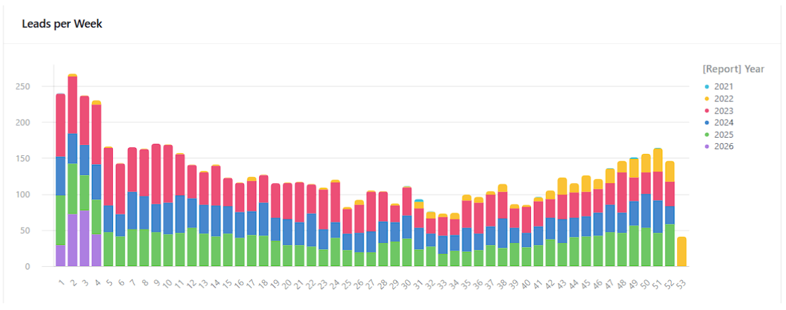
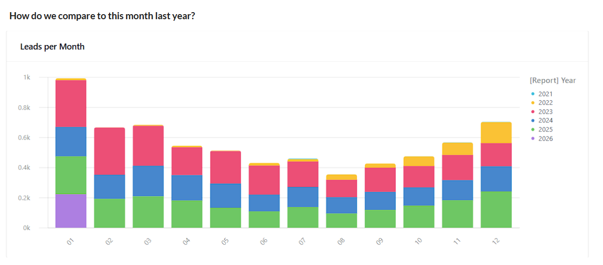
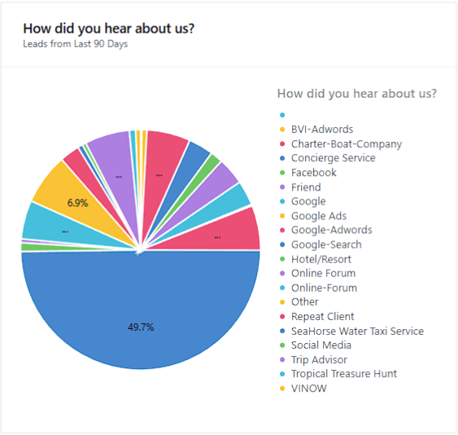
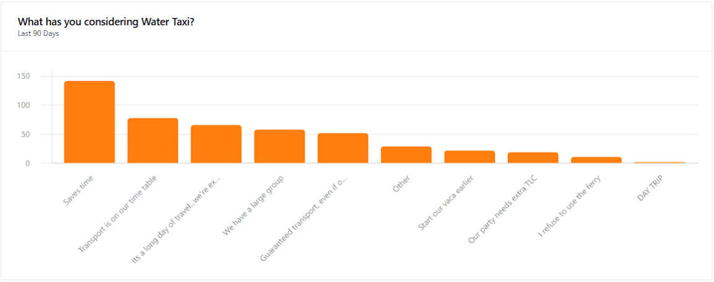
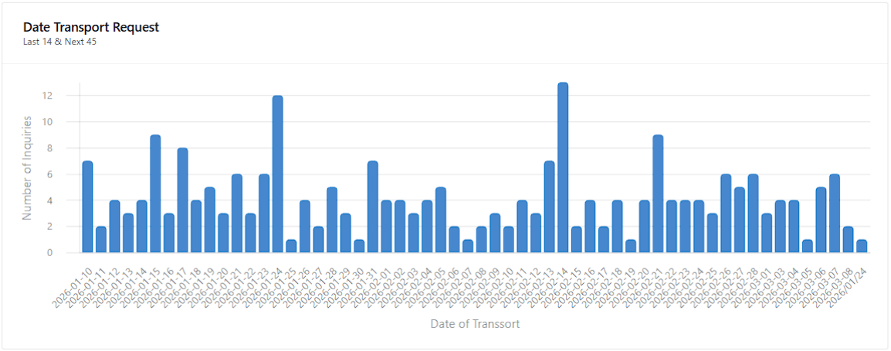

Custom CRM & lead pipeline
Every inquiry from ads, web forms, phone and referrals lands in one Airtable base with source, status and next step — no lead falls through.
07 — Run it · Airtable & no-code automations
Off-the-shelf CRMs make you work their way. We build integrated systems on Airtable — with Make.com, Softr and the tools you already pay for — around the way your team actually sells, schedules and delivers.
The off-the-shelf trap
Packaged CRMs assume a sales process that isn’t yours, so the team invents workarounds.
Leads in one app, jobs in another, invoices in a third — and a spreadsheet stitching them together.
Hours each week go to re-typing names, dates and amounts from one screen into the next.
By the time someone builds the month-end summary, the decision it should have informed has passed.
One source of truth in Airtable, with no-code automations moving data between your forms, ads, inbox, calendar and field team — so nobody re-types a record twice.
Every inquiry from ads, web forms, phone and referrals lands in one Airtable base with source, status and next step — no lead falls through.
Softr portals on top of Airtable so technicians and crew log in and see only their own jobs, routes and customer notes.
Quotes, proposals and service reports generated as branded PDFs with Documint and emailed automatically when a record changes.
Facebook Lead Ads and website forms piped in through Make.com, with closed sales sent back to the ad platform so it learns who actually buys.
Interfaces that answer the owner’s questions — volume, source, season, what’s booked — straight from live records.
Recurring filings, reminders, approvals and notifications triggered by the data itself, with scripting where no-code runs out.
Case study · Save The Ash Tree Co.
Save The Ash Tree is a seasonal tree-injection company protecting ash trees from Emerald Ash Borer across several Midwest markets — Minneapolis, Sioux Falls, Lincoln and beyond. Every season compresses lead generation, quoting, scheduling and treatment into a few short months, with technicians spread across states.
Kenny designed and built the system that runs it end to end: from the first Facebook ad click to the signed treatment report in the customer's inbox.
Facebook Lead Ads and website forms flow through Make.com into Airtable, tagged by market and campaign.
GoHighLevel texts and emails new leads within minutes — including an AI assistant persona that answers common tree questions.
Closed sales are sent back to Facebook through the Conversions API, so ad spend shifts toward people who become customers.
A Softr injection-scheduling app on Airtable where each logged-in technician sees only their own jobs and route.
QR and barcode images generated and attached to each tree’s record, so treatment history follows the tree.
Documint builds the PDF and Gmail sends it to the customer the moment a job is marked complete.
Case study · SeaHorse Water Taxi
SeaHorse Water Taxi is a private water taxi and charter service Kenny co-owns with his wife, operating out of Red Hook, St. Thomas. A Grady-White 330 Express carries travelers between St. Thomas, St. John and the British Virgin Islands — on the guest's schedule, not the ferry's.
Demand swings hard with the season, inquiries arrive from a dozen channels, and international crossings come with paperwork. So every inquiry, quote, trip and filing lives in one Airtable base — and the dashboards below update the moment a new lead lands.
Real-time data tracking
These are SeaHorse's actual Airtable dashboards. No one exports a spreadsheet or builds a slide — each chart reads straight from the records as they're created, so the owners see this week against the last five years, where leads come from and what's booked ahead, any time they open a phone.





How a build runs
We walk through how work actually moves today — every form, inbox, spreadsheet and handoff — and agree on what the system must answer.
The Airtable base, interfaces, portals and automations, built in stages so your team uses each piece while the next is underway.
Documentation, short training videos and a walkthrough, so your team can run and adjust the system without calling us.
Who builds it
Kenny isn't a developer selling software — he's an operator who builds the systems his own companies run on. He spent 20+ years in agricultural biotech, commercialization and consulting before running two businesses of his own, and he designs every base the way a program manager would: around decisions, owners and handoffs.
That means your system gets scoped like a project, documented like a deliverable and left in the hands of a team that knows how to run it.
Show us the tools and spreadsheets you're juggling. In one call we'll sketch what an integrated Airtable system could look like for your business.